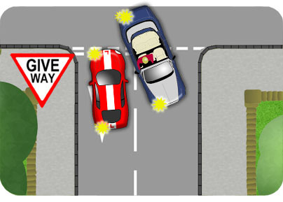
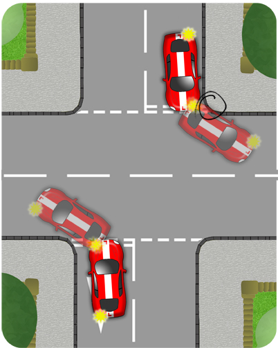
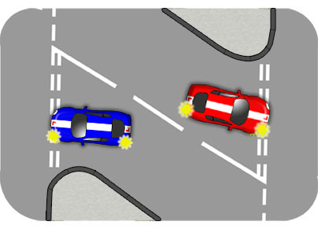
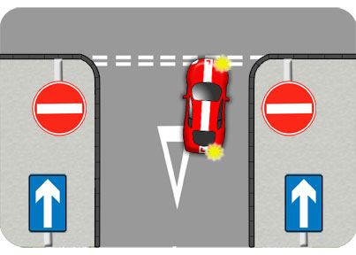
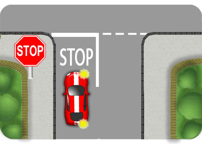
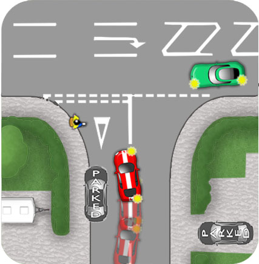

At wide junctions, keep to the left or right of the lane, allowing space for traffic to emerge alongside. Sometimes separate lanes are marked out at the junction.
When turning right, arrive at the line very straight so that you don't cross the centre line of the road. Steer right only when you begin to emerge.
When turning left, follow the shape of the kerb so that you can steer smoothly into the left lane of the new road. Achieve this by looking to the left as well as the right on the approach.
Narrow Junctions

When emerging left from a very narrow junction, make sure your front nearside wheel doesn't get too close to the kerb. As you turn, your rear wheels will take a shortcut which could result in your vehicle mounting the pavement.
When turning right from a narrow junction, try to be central in the lane, not too close to the centre line. This will allow a little extra space for traffic turning into the junction.
Be careful of vehicles cutting the corner as you arrive at the line, especially large ones.

Y Junctions

When approaching a Y shaped junction to turn right (red car), steer a little left as you arrive at the line. This allows you a better view to the left and allows space for vehicles entering the junction.
Approaching a junction like this to turn left (blue car), leave a little extra space from the kerb as you’re in more danger of mounting it with the rear wheel due to the amount of steering required.
One Way Streets

When emerging right from a one way street, position yourself to the right of the road. Emerging from the left could cause confusion if two vehicles are turning right. This position might also allow left turners to emerge simultaneously if there's enough room.
Failure to take this position will result in a fail on your test.
Stop Junctions

Make sure you recognise the sign and road markings for a stop junction. (It is the only octagonal sign so that it might be recognised even if obscured by snow). There is some kind of extra danger beyond these junctions so you’re required to come to a complete stop under all circumstances. Make thorough observations and then emerge carefully.
Failure to come to a complete stop at the line will result in a fail on your driving test.
Parked Cars and Pedestrians

It is not unusual to encounter parked cars very close to junctions. If necessary, steer carefully around them to arrive at the line on the correct side of the road. Lazy steering could easily block the junction.
As you arrive, you might encounter pedestrians intending to cross the mouth of the junction. If they're on the road or waiting on the pavement then they have priority, so roll to a smooth stop allowing them a safe space to cross.